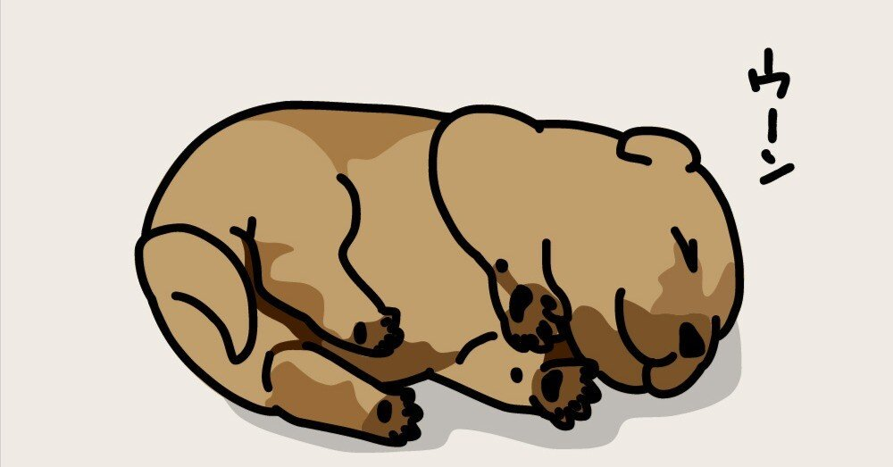

この世には様々な“ポイント”という制度がある。
Tポイント、Pontaポイント、dポイント、Vポイント……最近は特にポイントの種類が増えたような気もする。それに、各社こぞってポイント還元率がどうとか、ポイント何倍キャンペーンとかもやっているし、もはや今は“ポイント戦国時代”といってもいいかもしれない。
かくゆう私は、楽天ポイントを大変贔屓にさせてもらっている。
数年前まではAmazonポイントを貯めていたのだが、上述の高いポイント還元率に目がくらみ、関ヶ原の小早川秀秋よろしく、楽天ポイントに鞍替えした裏切り者がこの私。そう、俗にいう“楽天経済圏”で生きている人間なのだ。
といっても、使っているのは楽天カードと楽天銀行、実店舗での買い物に楽天edy+通販で楽天市場を使うくらいで、携帯電話やガス・電気は楽天ではない。
「甘い！その程度の者が楽天経済圏を語る資格などない！」という方がいれば、気分を害してしまい大変申し訳ない。この記事は読むに値しないと思うので、今すぐブラウザバックしていただきたい。
そんな「楽天経済圏に片足ツッコんでますよ」おじさんである私だが、最近ようやく知ってしまった事実がある。そう、楽天ポイントには期間限定ポイントがあるということに……！
「なんだと！そんな者が楽天経済圏を……かくがくしかじか」という方はここまで読んでいただいて感謝しかない。また違う記事でお会いできたら嬉しい。
簡単に説明しておこう。
楽天市場の期間限定ポイントとは、通常の買い物で貯まるポイントとは別にもらえるポイントのことで、お買い物マラソンなどのキャンペーン時に買い物するとポイントがつくのだ。
ちなみに、ポイントを使用する際は期限のある期間限定ポイントから消費されるらしい。さすが楽天！なんて親切設計！やっぱり人気のサービスは違うね！ヨッ！楽天屋～！
……といいたいところだが、私はそんなお客様第一精神の塊である期間限定ポイントをあろうことか失効させてしまったのだ。大体、3000ポイントくらい。
それに気づいたのは朝、起きた時のこと。
憂鬱な月曜日、目覚めると私は1日1回引ける楽天市場アプリ限定のダーツくじ(当たれば1～5,000ポイントゲット)をやるのだが、その時に映ったポイント残高の異変に気付いてしまった。
「ん？ ポイント減ってない？」
もはやダーツどころではない。
おいおい、待て待て！目をこすってよく見ても、昨日まではたんまり表示されていたポイントがほとんど残っていないじゃないか！一体全体、どうゆうこと？私、なんか悪いことした？ただ、1年引き続けて1回しか当たったことのない無謀な賭けを今日も健気にしてただけなのに！って、やっぱり今日も外れた！いや、そんなことはもうどうでもいいの！私の楽天ポイントを返して！ねえ、なんとかいいなさいよ！
パニくる脳内をよそに、出勤前の時間というのは残酷なものだ。ただでさえ早く過ぎ去るのに、ポイント失効ダメージがボディブローのように効いているおじさんには、まるで加速度的に早くなるボールのように思えたのだった。
「なんで遅刻したの？」「えへへ、実は楽天ポイントが失効したショックで立ち上がれませんでした」普段は温厚な上司もさすがにキレて手がつけられなくなるだろう。そんな姿は見たくない！早く支度を済ませ、電車に乗らねば！
なんとか会社に間に合い、午前中の仕事を終えたその日の昼休み、今朝の悲劇をGoogle先生に相談してみたら、期間限定ポイントの存在を知った次第である。
ちょっと話は逸れるが、私は最近、自分の癖に気づいてしまった節がある。そう、貯金額を見てニヤニヤする男だということに。
節約で有名なオードリーの春日や、最近人気の節約系YouTuberの面々には遠く及ばないが、基本的に誰かと行動しない限り私は自分にあまりお金をかけない。
もちろん、最低限の身だしなみや生きていくための食事など、社会生活を営むためのお金はかけるが、物欲も恐らく一般よりはない方だし、「ここ行ってみたいな～」なんていう生粋の旅人肌でもないのだ。
そうすると、貯金額は自然と増えていく。厳密にいうと少々投資もやっているため、貯金額というより総資産額といった方が正しいのかもしれないが。
最近は便利になったもので、マネーフォワードという家計簿アプリのおかげで、銀行や証券問わず最初の口座登録さえ済ませれば収支が一目瞭然になった。
それを毎日開いてはニヤニヤする生活。やだやだ。なんていやらしい男なのだ。
もちろん、それは総資産額だけとは限らない。
その要領で、楽天ポイントが3000ポイントくらいあるのを肴にビールを飲み、柿の種を貪り、たまたまつけたテレビの中の女優さんにデレデレしてしまっていた！この愚か者めが！
ああ。失効したポイントを悔やんでいても返ってくるわけないのに。でも、どうして人は意味のない後悔をしてしまうのだろう。
いつもなら、楽天ポイントをある程度貯めてトイレットペーパーやシャンプーなどの生活用品をまとめて買っていたのに……。「それくらい、自分で買いに行けよ」ってことなのか。うん、そうだよね、いつもごめんね、配達のお兄さん。
そんなわけなので、楽天ポイントには期限付きのものもあるらしいので、皆さんも気をつけましょう。えっ？お前みたいな者が楽天ポイントを語るなって？……ですよね～。